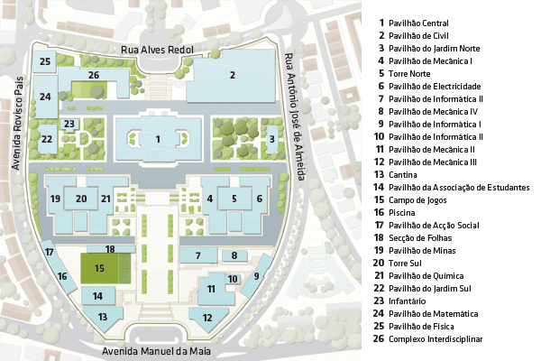

All of the SAT 2019 Workshops will take place at Informática buildings of the Instituto Superior Técnico (IST/UL) of the University of Lisbon.
The SMT Workshop will take place in building 10 on the map below. The other workshops are in building 7.

Registration is handled via the SAT 2019 conference. See the SAT conference workshop page for additional information about the workshop venue including nearby lunch options.